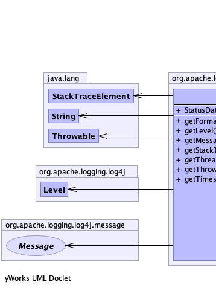
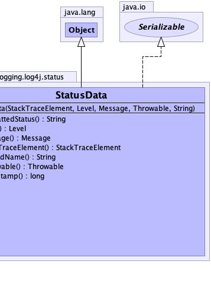

public class StatusData
extends java.lang.Object
implements java.io.Serializable
|  |  |
| Constructor and Description |
|---|
StatusData(java.lang.StackTraceElement caller,
Level level,
Message msg,
java.lang.Throwable t,
java.lang.String threadName)
Creates the StatusData object.
|
| Modifier and Type | Method and Description |
|---|---|
java.lang.String |
getFormattedStatus()
Formats the StatusData for viewing.
|
Level |
getLevel()
Returns the logging level for the event.
|
Message |
getMessage()
Returns the message associated with the event.
|
java.lang.StackTraceElement |
getStackTraceElement()
Returns the StackTraceElement for the method that created the event.
|
java.lang.String |
getThreadName() |
java.lang.Throwable |
getThrowable()
Returns the Throwable associated with the event.
|
long |
getTimestamp()
Returns the event's timestamp.
|
public StatusData(java.lang.StackTraceElement caller,
Level level,
Message msg,
java.lang.Throwable t,
java.lang.String threadName)
caller - The method that created the event.level - The logging level.msg - The message String.t - The Error or Exception that occurred.threadName - The thread namepublic long getTimestamp()
public java.lang.StackTraceElement getStackTraceElement()
public Level getLevel()
public Message getMessage()
public java.lang.String getThreadName()
public java.lang.Throwable getThrowable()
public java.lang.String getFormattedStatus()